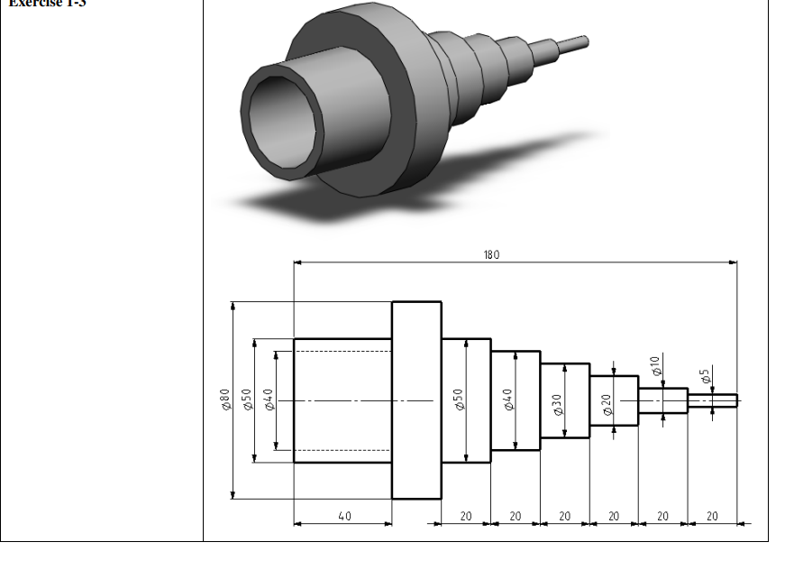
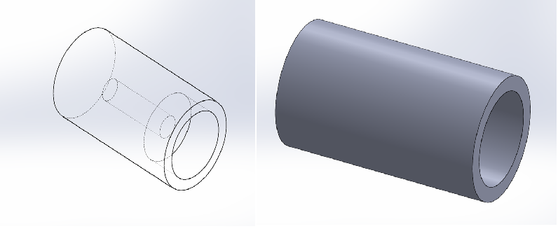
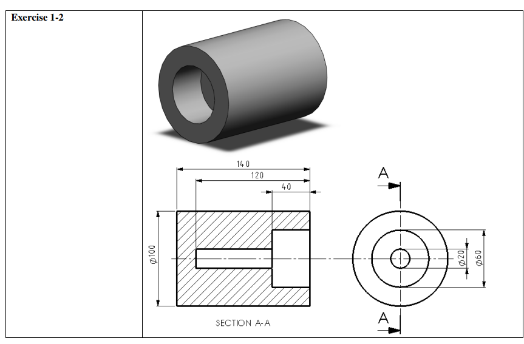
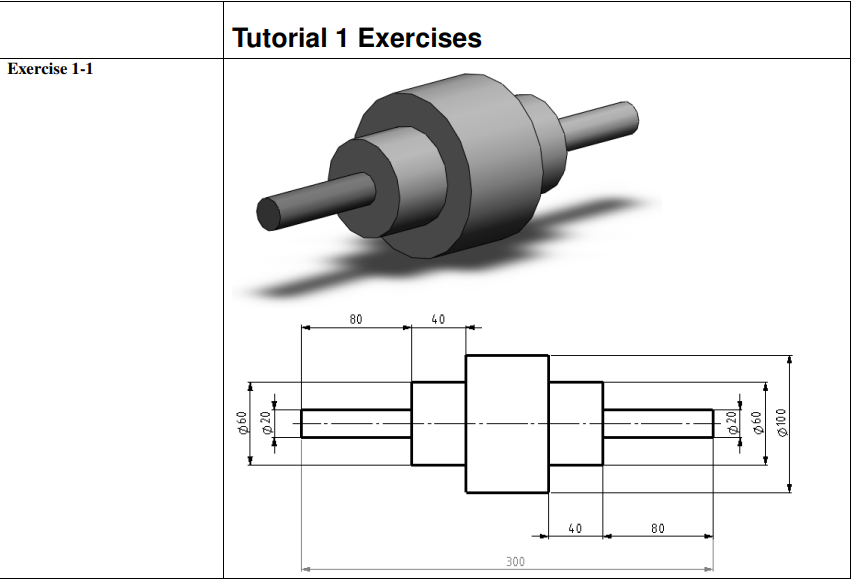

ACADEMIC & CAD PROJECTS

Automatic Trash Can Lid
Circular multi-blade iris cover system designed for hygienic, automatic opening.
Tibia Bone Fracture Model
Mesh cutting bone geometry digitally to print fracture learning prototypes.

Electric Scooter Prototype
Parametric assembly model focusing on packaging, swingarm, styling, and suspension.
CAD Practice
A repository of 3D parts and drafting exercises modeled to master engineering clearances, tolerance fits, and complex geometries.

F450 Quadcopter Frame
Modeled structural arms, plates, brushless motors, and props, completing a rigid mate assembly in SOLIDWORKS.


Multi-Step Tapered Sleeve
Modeled a multi-step external shaft collar with a hollow internal bore from standard blueprints, matching all section dimensions.
Centrifugal Impeller
Practiced complex curved lofted blades and hub profile rotations using advanced surface loft rules.
Engine Piston & Rod
Followed advanced surfacing tutorial to draft crown domes, connecting rod ribs, and gudgeon pin fits.


Hollow Stepped Cylinder
Modeled a hollow collar bushing featuring a two-stage internal stepped bore, practicing cross-sectional dimensioning.


Concentric Stepped Shaft
Modeled concentric cylindrical shoulders from standard engineering blueprints, verifying axial shoulder lengths and face limits.
GET IN TOUCH
Looking for a motivated Design Engineer to join your team? Transmit your job inquiries or interview details directly to my inbox.